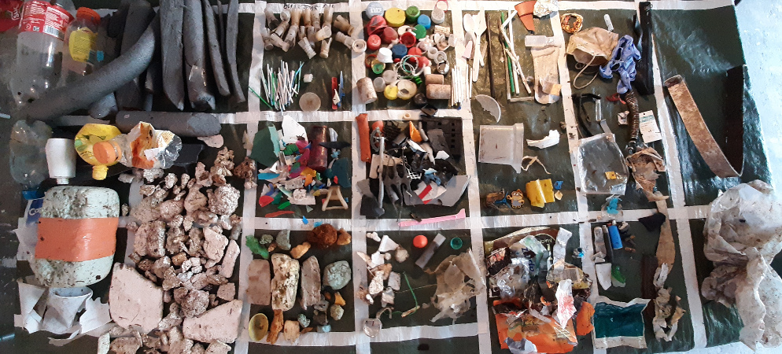

The Litter Surveyor Report¶
Edition 1 ver=0.6 the countdown version
The Litter Surveyor is a summary and analysis of the beach-litter surveys conducted and the methods employed in Switzerland from April 2020 to May 2021.
The survey results are presented down to the municipal level for each water feature and municipality that was sampled. The results are in units of pieces of trash per 100 meters (p/100m).
The emphasis of the analysis is the identification of measured environmental variables within a fixed radius of 1500m around each survey location that may have a statistically significant impact (+,-) on survey results. In this edition environmental variables are drawn from the swiss land use survey of 2018 [Con21a] and the current topographical layers from swissTLMRegio [Con21b]. Various non parametric tests are applied including bootstrap methods to identify differences between groups of survey results in space and time.
The key indicators chapter gives a precise definition of each of the basic statistics that can be derived from the survey results and how they are used for identifying zones of accumulation and significant events. The methods used to calculate the different environmental variables are explained in The land use profile. The codes and descriptions used to identify the items as well as the different economic groupings are covered in detail in Code groups.
The Findings section are topics chosen by the litter surveyors that are based on experiences in the field and demonstrated using the data from the surveys. For this first edition the survey results were placed in the context of the Law for the protection of the environment [fdlCs20a] (LPE) and current EU guidance on calculating baselines [HG19]. The survey methods were implemented in the alpine environment to determine feasibility of the current protocol and evaluate a common reporting method for all stakeholders.
Summary of all surveys¶
The sampling period (SP) was from April 01, 2020 - May 31, 2021. This date range overlaps with the start and end date of the Swiss Litter Report (SLR) [Bla18] the
last national level project to use the standard protocol described in the Guide to monitoring beach litter or any other comparable method.
Map of survey locations. Locations grouped by survey area. April 2020 - May 2021

There were 385 samples from 143 locations in 77 different municipalities.
The median survey result was 158 pieces per 100 meters (p/100m), with a 95% confidence interval (CI) of 137p/100m - 188/p100m. This represents 54,713 recorded objects or \(\approx\) 306kg of trash including \(\approx\) 96kg of plastic. The total linear distance surveyed was \(\approx\) 20 km or a surface area of 9 hectares. The study was focussed on lakes, 331/385 samples come from 11 lakes. Both Geneva and Zurich are included putting the total municipal population with a stake in this report at 1.7 million.
See the section All Survey areas for complete details.
Trends from 2017¶
When the lake and rivers with samples in both projects are considered there was no statistical difference between the SLR results and IQAASL. The survey results show that in 2020 there were fewer cigarettes, bottle tops and glass fragments and more cotton swabs, industrial sheeting and plastic construction waste.
Comparison of survey results between SLR (2018) and IQAASL (2021)
Top Left: survey totals by date, Top right: median monthly survey total

bottom Left: number of samples with respect to the survey total, bottom right: empirical cumulative distribution of survey totals
See the full report More and less trash since 2017
Shared responsibility¶
According to the Law for the protection of the environment the pincipal of causality is defined as:
The person who initiates a measure prescribed by this Act shall bear the costs thereof.
We use beach litter survey results to move up the causal chain to identify secondary sources of litter.

Identifying secondary sources of specific litter items. Consumers or handlers of plastic production pellets and probable fluvial route to survey location. Venoge and Thiele rivers.
See the section Shared responsibility
Baseline and extreme values¶
The proposed methods in the JRC Technical document An Analysis of a pan-European 2012-2016 beach litter dataset are applied to the results from IQAASL. The baseline values are calculated for each survey area and examples are given of the the different methods to identify extreme values.
Is this alot of trash to find at the beach?
{kind=link}
See the section Calculating baseline values for sample calculations and a detailed explanation.
Sources¶
Economically the sources are determined by grouping the codes assigned to the objects according to use or description. Combined food and tobacco items make up 36% of the items found and infrastructure and agriculture are 24% of the total. Objects originating from waste water facilities or objects less than five millimeters make up another 10%. The relative amounts change for each survey area suggesting that local priorities may not always match regional priorities.
See the section Code groups for a complete definition of how the codes were grouped.
The structure and evolution of this document¶
The purpose is to provide a repeatable method and process to collect and evaluate beach-litter data at a scale that is appropriate to Switzerland and exploitable by all stakeholders. The method and process need to reflect current advances in the field, the needs of stakeholders and faithfully report the survey results as collected by the surveyor.
This document is a collection of scripts written in python and markdown contained in a series of notebooks designed specifically for completing data analysis. This system has been in use for quite some time in the research community. Together those scripts make a book, or a Jupyter Book.
The surveyor uses this application plagespropres to submit data and the report is processed here: end of sampling repo.
Not all tasks have been automated. Land use data is calculated using QGIS and the method to automate this process has not been developed.
Identification, quantification and analysis of observable anthropogenic debris along swiss river and lakes (IQAASL)¶
IQAASL is a project sponsored by the Swiss Federal Office for the Environment to quantify shoreline trash along swiss lakes and rivers. Multiple small scale litter surveys are completed at different locations within a designated survey area. For the year 2020/2021 the survey areas were defined by the municipalities that border the Aare, Rhône, Ticino and Linth/Limmat rivers and any lakes or rivers that contribute.